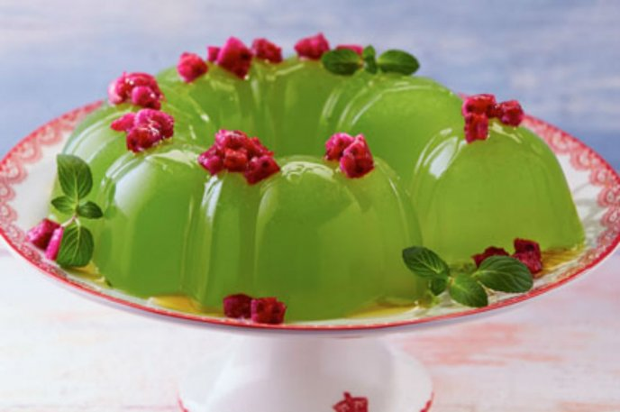

Gelatina De Tuna
- 1 1/2 Kilos de tuna
- 1 1/2 Tazas de agua
- 4 cucharadas de grenetina
- 3/4 De taza de jugo de limón
- 1/2 taza de agua fría
Modo De Preparacion
- Licuar las tunas y despues colar el jugo, Las semillas sobrantes se desechan.
- Disolver la grenetina en el agua, se deja humectar 5 minutos y se derrite en el microondas o a baño maría hasta que la mezcla quede espesa.
- Revolver el jugo de tuna con el jugo de limón, el azúcar y grenetina y se mezcla hasta que el azúcar se disuelva.
- Vaciar la gelatina a un molde y refrigerar por varias horas hasta que cuaje.
- Al estar lista, desmoldar en un plato y servir